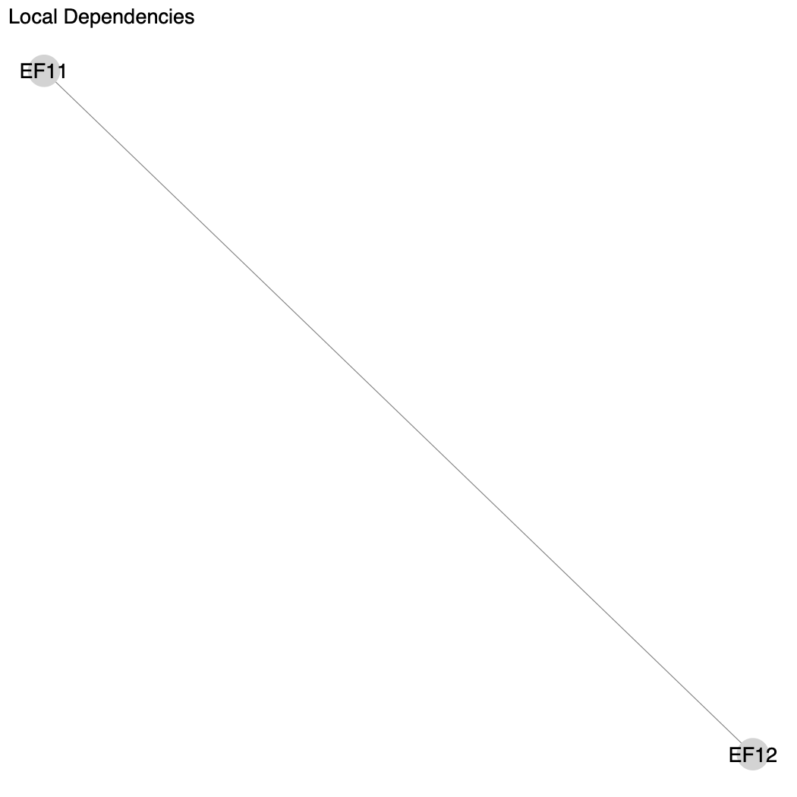
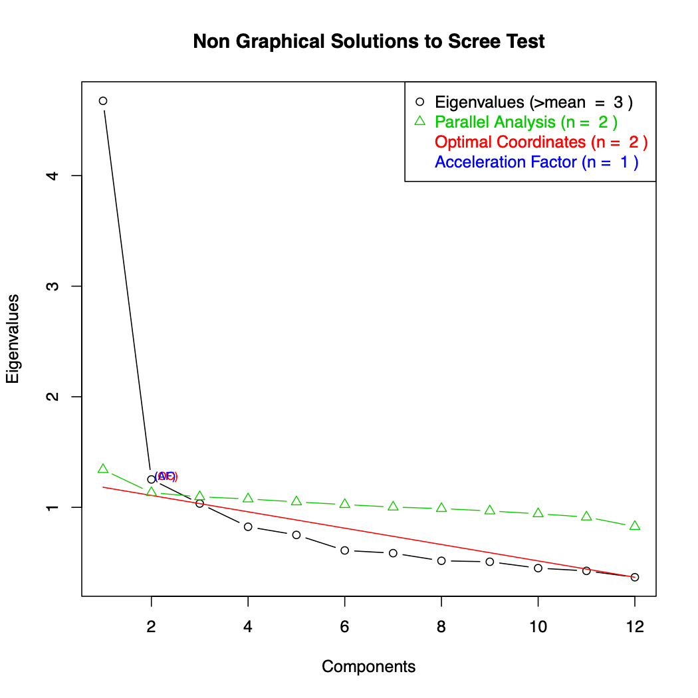
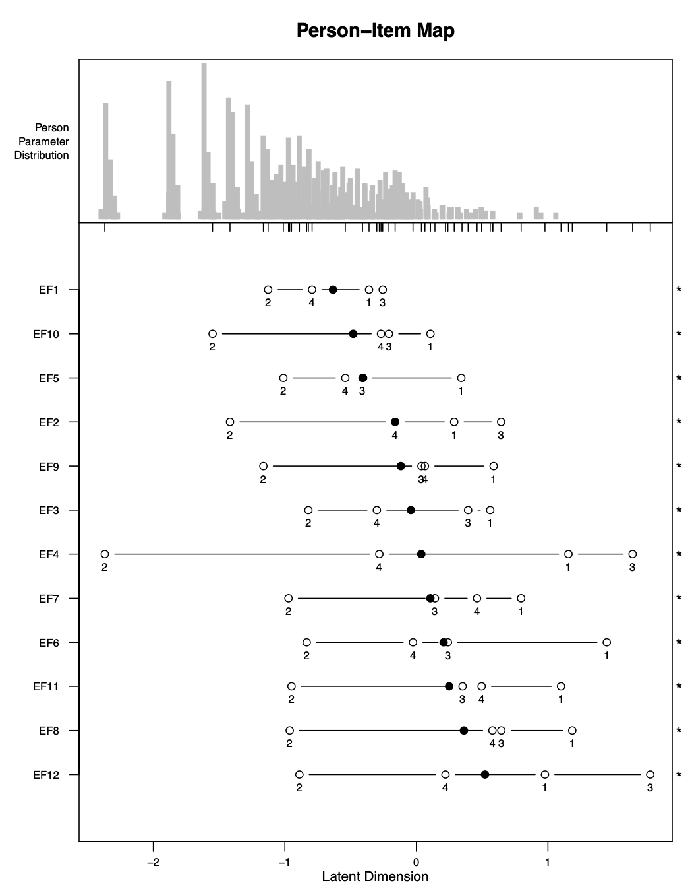
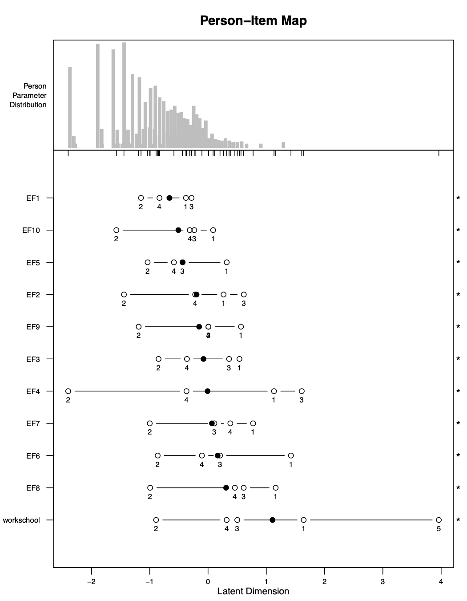
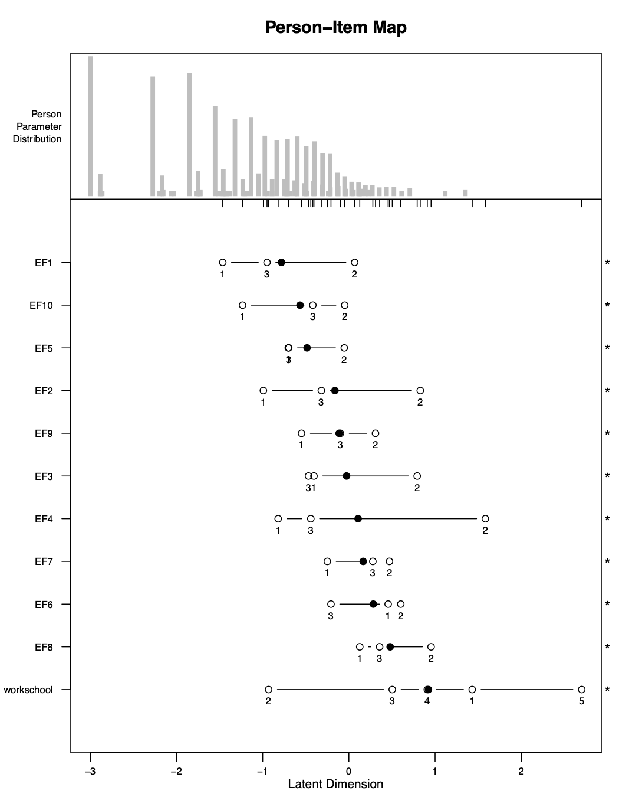
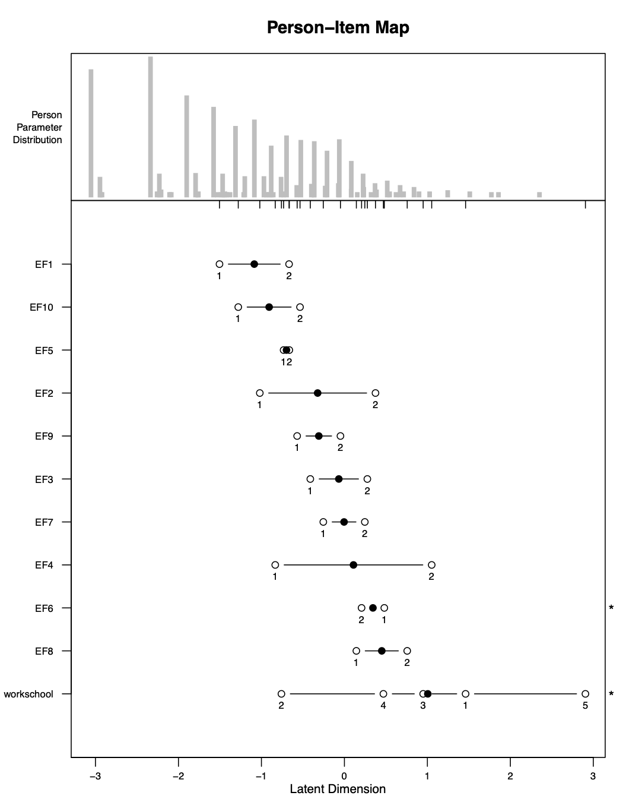
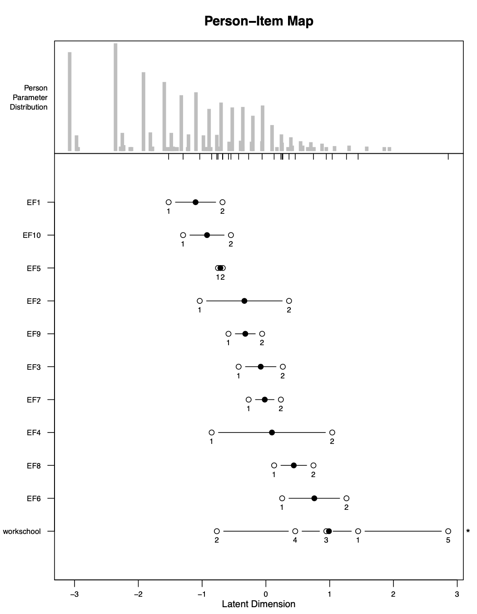

vignettes/c3_rasch_adults_EN.Rmd
c3_rasch_adults_EN.RmdTo perform Rasch Analysis for adults, only one function needs to be
used: rasch_mds(). This is referred to as a “wrapper
function.” A wrapper function is a function that makes it easier to use
other functions. In our case, rasch_mds() utilizes all the
other rasch_*() functions to perform the analysis. These
other rasch_*() functions used for adults are:
rasch_DIF()rasch_drop()rasch_factor()rasch_model()rasch_rawscore()rasch_recode()rasch_rescale()rasch_split()rasch_testlet()You only need to use the function rasch_mds(). But if
you wanted to perform your analysis in a more customized way, you could
work with the internal functions directly.
After each iteration of the Rasch Model, the codes above produce a variety of files that will tell you how well the data fit the assumptions of the model at this iteration. The most important files are the ones below. We will explain each in detail through our example.
LID_plot.pdf - shows correlated itemsLID_above_0.2.csv - correlations between correlated
itemsparallel_analysis_scree.pdf - scree plotbifactor_analysis.pdf - loadings of factorsPImap.pdf- locations of persons and items, ordering of
thresholdsitem_fit.csv - item fitTargeting.csv - reliability of modelrasch_mds()
In this section we will examine each argument of the function
rasch_mds(). The help file for the function also describes
the arguments. Help files for functions in R can be
accessed by writing ? before the function name, like
so:
?rasch_mdsBelow is an example of a use of the function
rasch_mds():
rasch_mds(
df = df_adults,
vars_metric = paste0("EF", 1:12),
vars_id = "HHID",
vars_DIF = c("sex", "age_cat"),
resp_opts = 1:5,
max_NA = 2,
print_results = TRUE,
path_parent = "/Users/lindsaylee/Desktop/",
model_name = "Start",
testlet_strategy = NULL,
recode_strategy = NULL,
drop_vars = NULL,
split_strategy = NULL,
comment = "Initial run"
)The first argument is df. This argument is for the data.
The data object should be individual survey data, with one row per
individual. Here the data is stored in an object df_adults,
which is a dataset included in the whomds package. To find
out more about df_adults please look at its help file by
running: ?df_adults
The second argument is vars_metric, which is equal to a
character vector of the column names for the items to use in Rasch
Analysis. Here it is equal to paste0("EF", 1:12), which is
a character vector of length 12 of the column names EF1,
EF2, … EF11, and EF12.
The next argument is vars_id, which is the name of the
column used to uniquely identify individuals. Here the ID column is
called HHID.
The next argument is vars_DIF. It is equal to a
character vector with the names of the columns that are used to analyze
differential item functioning (DIF). DIF will be discussed in more
detail in later sections. Here vars_DIF is equal to a
character vector of length two containing the name of the columns
"sex" and "age_cat".
The next argument is resp_opts. This is a numeric vector
with the possible response options for vars_metric. In this
survey, the questions EF1 to EF12 have
response options 1 to 5. So here resp_opts is equal to a
numeric vector of length 5 with the values 1,
2, 3, 4 and 5.
The next argument is max_NA. This is a numeric value for
the maximum number of missing values allowed for an individual to be
still be considered in the analysis. Rasch Analysis can handle
individuals having a few missing values, but too many will cause
problems in the analysis. In general all individuals in the sample
should have fewer than 15% missing values. Here max_NA is
set to 2, meaning individuals are allowed to have a maximum
of two missing values out of the questions in vars_metric
to still be included in the analysis.
The next argument is print_results, which is either
TRUE or FALSE. When it is TRUE,
files will be saved onto your computer with results from the Rasch
iteration. When it is FALSE, files will not be saved.
The next argument is path_parent. This is a string with
the path to the folder where the results of multiple models will be
saved, assuming print_results is TRUE. The
folder in path_parent will then contain separate folders
with the names specified in model_name at each iteration.
In the function call above, all results will be saved on the Desktop.
Note that when writing paths for R, the slashes should all
be: / (NOT \). Be sure to include a final
/ on the end of the path.
The next argument is model_name. This is equal to a
string where you give a name of the model you are running. This name
will be used as the name of the folder where all the output will be
saved on your computer, if print_results is
TRUE. The name you give should be short but informative.
For example, you may call your first run “Start”, as it is called here.
If you create a testlet in your second run perhaps you can call it
“Testlet1”, etc. Choose whatever will be meaningful to you.
The next arguments are testlet_strategy,
recode_strategy, drop_vars and
split_strategy. These are arguments that control how the
data is used in each iteration of the Rasch Model. Each will be
discussed in more detail in later sections. Here they are all set to
NULL, which means they are not used in the iteration of
Rasch Analysis shown here.
The last argument is comment. This is equal to a string
where you can write some free-text information about the current
iteration so that when you are looking at the results later you can
remember what you did and why you did it. It is better to be more
detailed, because you will forget why you chose to run the model in this
particular way. This comment will be saved in a file
Comment.txt. Here the comment is just
"Initial run".
Next, we will discuss the arguments that give instructions about how to adjust the data. These parts may not be entirely meaningful now, but will become more so after we go through an example.
If you want to create testlets–that is, sum up items into super items
in order to fix item dependence–then pass a strategy for making testlets
to the argument testlet_strategy.
testlet_strategy is a list with one element of the list per
testlet that you want to create. Each element of the list must be a
character vector of column names to use for the testlet. Optionally, you
can name the elements of the list to give custom names to the new
testlets. Otherwise, the new testlets will be the original column names
separated by “_“.
For example, imagine you wanted to make two testlets: one testlet
from variables EF4, EF6, and EF8
with a new name of new, and another testlet from
EF5 and EF7, without a new name specified.
Then you would specify testlet_strategy as the
following:
If you want to recode response options–that is, change response
options in order to create stochastic ordering–then pass a strategy for
the recoding to the argument recode_strategy.
recode_strategy takes the form of a named list, with one
element of the list per recode strategy. The names of the list are the
groups of column names to use for each recoding strategy, separated only
by “,”. Each element of the list is a numeric vector giving the new
response options to map the variables to.
For example, if you wanted to collapse the last two response options
of the variables EF1 and EF2, and collapse the
first two response options of EF3, then you would set
recode_strategy as the following:
If you want to drop any items from your analysis–perhaps in the event
of extremely poor fit–then set drop_vars as a character
vector of the column names to drop from the analysis.
For example, if the items EF4 and EF7 were
extremely poorly fitting items, then they could be dropped from the
analysis by setting drop_vars as the following:
If you want to split items by subgroups–perhaps in the event of high
differential item functioning (DIF)–then you give the instructions for
your split strategy in the argument split_strategy.
Splitting items entails taking a single item and separating it into
two or more items for different groups. For example, if we wanted to
split an item var by sex, then we would create two items:
var_Male and var_Female. var_Male
would be equivalent to var for all respondents that are
men, and NA for the respondents that are women.
var_Female would be equivalent to var for all
respondents that are women, and NA for the respondents that
are men.
split_strategy takes the form of a named list. There is
one element of the list per variable to split by. Each element of the
list must be a character vector of column names to split. The names of
the list are the variables to split each group of variables by.
For example, if we wanted to split the variables EF1 and
EF2 by sex, and split EF3 by age
category age_cat, then we would set
split_strategy to be the following:
However, because we expect a certain amount of DIF when measuring
disability–especially by sex and age–we rarely use this option. To not
perform any splitting, leave split_strategy as its default
value of NULL.
Below we will be creating a metric using the sample data
df_adults using the environmental factors (EF) questions
from the questionnaire. These are questions EF1 to
EF12.
We will start by trying to run the model without performing any adjustments on our data. To run this model, run a command that is similar to this:
start <- rasch_mds(
df = df_adults,
vars_metric = paste0("EF", 1:12),
vars_id = "HHID",
vars_DIF = c("sex", "age_cat"),
resp_opts = 1:5,
max_NA = 2,
print_results = TRUE,
path_parent = "/Users/lindsaylee/Desktop/",
model_name = "Start",
testlet_strategy = NULL,
recode_strategy = NULL,
drop_vars = NULL,
split_strategy = NULL,
comment = "Initial run"
)The code you run may not be exactly the same, because for instance
the directory you use for path_parent will be specific to
your machine, and you may choose a different model_name and
comment for your model.
By running this command, in addition to printing results to your
machine (because print_results is TRUE), you
are also saving some output to an object in R’s global
environment called start. This object is a list with three
elements: one named df, one named vars_metric,
and one named df_results. df contains the data
with the transformed variables used to create the score and the rescaled
scores. vars_metric is a character vector of the names of
the vars_metric after transforming the variables.
df_results is a data frame with one row and a column for
each of the main statistics for assessing the assumptions of the Rasch
Model. df_results from multiple models can be merged in
order to create a data frame that allows you to quickly compare
different models.
It is not necessary to save the output of rasch_mds() to
an object in the global environment, but it makes it easier to
manipulate the resulting output in order to determine what adjustments
to make to your data in the next iteration.
After running this command, various files will be saved to the folder
that you specified. Go to the path_parent folder, and you
will see a new folder with the name you specified in
model_name. Inside that folder, there will be many files.
We will focus on the most important ones. Please read again Section
@ref(repair) to review how the different Rasch Model assumptions affect
one another and to understand why we will check the important files in
this particular order.
First we will check the local item dependence of the items. We can
check this by looking at the files LID_plot.pdf and
LID_above_0.2.csv. LID_above_0.2.csv gives the
correlations of the residuals that are above 0.2, and
LID_plot.pdf is a visualization of these correlations. From
these files, we can see that the items EF11 and
EF12 are correlated. The value of the correlation is
approximately 0.47. These two items have to do with how facilitating or
hindering work (EF11) and school (EF12) are.
Conceptually, it makes sense that people’s answers to these two
questions are related. We will take care of this correlation at the next
iteration of the model.

Next we will investigate the unidimensionality of the model by
analyzing the file parallel_analysis_scree.pdf. This is
what’s known as a “scree plot.” A scree plot shows the eigenvalues for
our model, and indicates how many underlying dimensions we have in our
questionnaire. With this scree plot, we hope to see a very sharp decline
after the first eigenvalue on the left, and that the second eigenvalue
falls below the green line of the “Parallel Analysis”. This would mean
that we have one underlying dimensions that is very strong in our data,
and any further dimensions that are computed have very little influence
on the model. In our graph, we do see a very sharp decline after the
first eigenvalue, and the green line crosses the black line after the
second factor. This is sufficient to confirm unidimensionality for the
model.

Another important file we can examine is the PImap.pdf.
This is the “Person-Item Map”, and it shows people and items on the same
continuum. The horizontal axis on the bottom of the figure is this
continuum, labeled as the “latent dimension”. The top of the figure is
labeled the “person parameter distribution”. This is the distribution of
people’s scores on the continuum. It can show you if, for instance, you
have more people on one end of the scale or another.

The largest part of this figure shows where the thresholds for each
item are located on the continuum. The thresholds are labeled with
numbers: the first threshold is labeled “1”, the second is labeled “2”,
and so on. The black dot is the average of the locations of all these
thresholds. The stars on the right side of the figure indicate whether
or not the thresholds are out of order. For instance, you can see for
EF1, the thresholds are ordered 2, 4, 1, 3 which is clearly
out of order. In fact, in this case, all of the items have thresholds
out of order. This is likely something we will need to take care of
later, but first we will take care of the item dependence.
Another important file we can analyze is item_fit.csv.
This file gives the fit statistics for each item. Two fit statistics
used here are “outfit” and “infit”, given in the columns
i.outfitMSQ and i.infitMSQ. They are both
similar, but outfit is more sensitive to outliers. In general we hope
that these figures are as close to 1 as possible. If they are below 1,
then it indicates the item is overfitting. “Overfit” refers to the
situation when items fit “too closely” to the model. If these statistics
are greater than 1, then they indicate the items are underfitting.
“Underfit” refers to the situation when items do not fit the model well.
Underfitting is more serious than overfitting. We hope in general that
items’ infit and outfit are between 0.5 and 1.5. If they are less than
0.5, reliability measures for the model may be misleadingly high, but
the scores can still be used. If they are between 1.5 and 2.0, this is a
warning sign that the items may be causing problems and you could begin
to consider adjusting the data to improve the fit. If they are greater
than 2.0, the scores calculated may be significantly distorted and
action should be taken to adjust the data to improve fit.
In this case, all of the items have infit and outfit statistics between 0.5 and 1.5, which is good.
To analyze overall model fit, we can open the file
Targeting.csv. This file gives the mean and standard
deviation of the person abilities and of the item difficulties. It also
gives the “person separation index”, or PSI, which is a measure of
reliability for the model. We hope this value is as close to 1 as
possible. It is generally acceptable if it is this figure is above 0.7,
though we hope to get values as high as 0.8 or 0.9. For our model here,
our PSI is 0.82, which is very good.
With our next iteration of the model, we will try to address the high
item dependence between items EF11 and EF12.
We will do this by creating a testlet between these two items. We do
this by changing the argument testlet_stratey as shown
below. We have given the new testlet the name workschool,
but you could name it whatever you wished.
testlet1 <- rasch_mds(
df = df_adults,
vars_metric = paste0("EF", 1:12),
vars_id = "HHID",
vars_DIF = c("sex", "age_cat"),
resp_opts = 1:5,
max_NA = 2,
print_results = TRUE,
path_parent = "/Users/lindsaylee/Desktop/",
model_name = "Testlet1",
testlet_strategy = list(workschool = c("EF11", "EF12")),
recode_strategy = NULL,
drop_vars = NULL,
split_strategy = NULL,
comment = "Testlet: EF11,EF12 (LID>0.25)"
)After running this model, we get an error:
#> Error in tapply(1L:ncol(X01beta), mt_ind, function(xin) { :
#> arguments must have same lengthThis error is a bit strange looking. But sometimes errors like this
will arise because of too many NAs in the data or if there are not
enough people endorsing all possible response options. Let’s look at the
file response_freq.csv in order to see how the response
options are distributed. We can see in this file that there are many
endorsements for all response options for all questions except for our
new testlet workschool, which only has 1 person with an
answer of 6, and no one with the possible answers of 5, 7 or 8. Perhaps
this is what is causing the problem.
First let’s discuss recoding in a bit more detail.
Each question with n response options will have
n-1 thresholds. The first threshold (labeled with a “1” in
the person-item map) is the point between the first and second response
option where a respondent is equally likely to choose either of these
response options; the second threshold (labeled with a “2” in the
person-item map) is the point between the second and third response
option where a respondent is equally likely to choose either of these
response options; and so on.
We want our thresholds in the person-item map to be in the right order: 1, 2, 3, 4 and so on. Disordered thresholds indicate a problem with our items. For example, if the thresholds are listed in the order 1, 2, 4, 3, then the data are telling us that someone is more likely to surpass the 4th threshold before the 3rd threshold, which does not make sense. We recode the response options in order create fewer thresholds so that it is easier for them to be in order.
The functions to perform Rasch Analysis shift our response options so that they start with 0. This is done because the functions for performing the analysis require it. For example, our survey has questions that have response options ranging from 1 to 5, but internally the function shifts these response options so they range from 0 to 4. Consequently, it becomes slightly more straightforward to interpret which response options need to be recoded directly from the labels of the thresholds. For example, if an item is disordered in the pattern 1, 2, 4, 3, this means that thresholds 4 and 3 are out of order. This also means that we can recode the transformed response options 4 and 3 in order to collapse these thresholds.
When we want to recode an item, we supply the function with
instructions on what to map the response options to. For example, let’s
say an item var has disordered thresholds in the pattern 1,
2, 4, 3. We now want to collapse the 4th and the 3rd threshold so that
the item becomes ordered. var has response options ranging
from 0 to 4 (after being shifted from the original 1 to 5), so we want
to combine the response options 3 and 4 for the item in order to
collapse these two thresholds. We do this by telling the function to map
the current response options of 0, 1, 2, 3, 4 to 0, 1, 2, 3, 3. This
means all responses of “4” are now recoded to be “3”. Now we will only
have 4 different response options, which means we will have 3 different
thresholds, which will now hopefully be in the proper order.
This will become clearer as we work through the example.
At the next iteration, we will try to recode the response options of our testlet so that the model is able to run.
We will run the command like below:
testlet1_recode1 <- rasch_mds(
df = df_adults,
vars_metric = paste0("EF", 1:12),
vars_id = "HHID",
vars_DIF = c("sex", "age_cat"),
resp_opts = 1:5,
max_NA = 2,
print_results = TRUE,
path_parent = "/Users/lindsaylee/Desktop/",
model_name = "Testlet1_Recode1",
testlet_strategy = list(workschool = c("EF11", "EF12")),
recode_strategy = list(workschool = c(0,1,2,3,4,5,5,5,5)),
drop_vars = NULL,
split_strategy = NULL,
comment = "Testlet: EF11,EF12 (LID>0.25); Recode: workschool to 0,1,2,3,4,5,5,5,5"
)The difference between the Testlet1 model and this model is that we
have now added a recoding strategy. We will recode the response options
of the testlet workschool to 0,1,2,3,4,5,5,5,5. This means
all response options will stay the same, except the response options 5
through 8 are combined.
After we run the command, we see the model is able to be calculated as normal.
First we check LID_plot.pdf to see if we have been able
to remove the item correlation. In this file, we see the message “No LID
found”, which means our testlet strategy was effective!
Next, we check the scree plot in the file
parallel_analysis_scree.pdf to make sure our
unidimensionality was maintained. Indeed, it looks very similar to the
initial model, which is what we hope for.
Next we check the person-item map in PImap.pdf. We can
see in this file all the items are still disordered, so this is likely
the next thing we will have to take care of in the next iteration of the
model.

We finally will check the item fit and the overall model fit in
item_fit.csv and Targeting.csv, respectively.
We can see these values are all still good–every item still has infit
and outfit statistics between 0.5 and 1.5, and the PSI is still
0.82.
Next we will try recoding items in order to create ordered thresholds. We are most worried about having the single items (everything that is not a testlet) ordered.
There are various ways you can choose the recoding strategy. In general you want to do the minimum amount of recoding necessary to acheive ordered thresholds. We will try first to collapse the first two thresholds for all items that are not the testlet. We will see which items this works for, and try a new strategy at the next iteration for the items where it did not work.
testlet1_recode2 <- rasch_mds(
df = df_adults,
vars_metric = paste0("EF", 1:12),
vars_id = "HHID",
vars_DIF = c("sex", "age_cat"),
resp_opts = 1:5,
max_NA = 2,
print_results = TRUE,
path_parent = "/Users/lindsaylee/Desktop/",
model_name = "Testlet1_Recode2",
testlet_strategy = list(workschool = c("EF11", "EF12")),
recode_strategy = list(workschool = c(0,1,2,3,4,5,5,5,5),
"EF1,EF2,EF3,EF4,EF5,EF6,EF7,EF8,EF9,EF10" = c(0,1,1,2,3)),
drop_vars = NULL,
split_strategy = NULL,
comment = "Testlet: EF11,EF12 (LID>0.25); Recode: workschool to 0,1,2,3,4,5,5,5,5, everything else 0,1,1,2,3"
)We can see in the new person-item map that this strategy did not work for any of the items. So we will try a new strategy at the next iteration.

We can also check the other files to see if any other Rasch Model assumptions have now been violated with this recoding strategy. But because we are changing our strategy completely at the next iteration, it is not necessary to pay too much attention to the other files for this iteration.
From the person-item map for the Start model, we can see our items are disordered in a bit of a complicated way: many items have thresholds in order 2, 4, 1, 3 or in order 2, 3, 4, 1. Usually if an item has disordered thresholds in a fairly uncomplicated pattern (for example, 1, 2, 4, 3 or 2, 1, 3, 4) then then the recoding strategy is straightforward. For example, with disordering of 1, 2, 4, 3 it is clear that the respone options 3 and 4 should be collapsed. With disordering of 2, 1, 3, 4 then the response options of 1 and 2 should be collapsed.
In our case, the disordering is fairly complicated so the recoding strategy is less straightforward and will likely have to be more extreme. At this iteration, we will try collapsing two sets of response options: we will collapse 1 with 2 and 3 with 4, as shown below.
testlet1_recode3 <- rasch_mds(
df = df_adults,
vars_metric = paste0("EF", 1:12),
vars_id = "HHID",
vars_DIF = c("sex", "age_cat"),
resp_opts = 1:5,
max_NA = 2,
print_results = TRUE,
path_parent = "/Users/lindsaylee/Desktop/",
model_name = "Testlet1_Recode3",
testlet_strategy = list(workschool = c("EF11", "EF12")),
recode_strategy = list(workschool = c(0,1,2,3,4,5,5,5,5),
"EF1,EF2,EF3,EF4,EF5,EF6,EF7,EF8,EF9,EF10" = c(0,1,1,2,2)),
drop_vars = NULL,
split_strategy = NULL,
comment = "Testlet: EF11,EF12 (LID>0.25); Recode: workschool to 0,1,2,3,4,5,5,5,5, everything else 0,1,1,2,2"
)We can see with this recoding strategy that the thresholds are now
ordered for most of the items! The only item it did not work for is
EF6, which we will have to try a different strategy for at
the next iteration.

We made progress on our threshold disordering, but we need to make
sure that the other Rasch Model assumptions have not now been violated
with this new strategy. We check LID_plot.pdf and see we
still have achieved item independence. We also check the scree plot in
parallel_analysis_scree.pdf to see if we still have
unidimensionality. Finally, we also check item_fit.csv and
Targeting.csv and see that the values are still acceptable
in these files as well. So we will proceed with an altered recoding
strategy in the next iteration.
We still have two items that are disordered: EF6 and
workschool. We do not generally worry about testlets being
disordered because they are not items originally included in the
questionnaire. We could recode workschool if its item fit
was very poor, but in our model it maintains good item fit based on the
infit and outfit statistics, so we will not recode it.
Therefore at this iteration we will just try to solve the disordering
of EF6. We will try collapsing the middle three response
options, as shown below.
testlet1_recode4 <- rasch_mds(
df = df_adults,
vars_metric = paste0("EF", 1:12),
vars_id = "HHID",
vars_DIF = c("sex", "age_cat"),
resp_opts = 1:5,
max_NA = 2,
print_results = TRUE,
path_parent = "/Users/lindsaylee/Desktop/",
model_name = "Testlet1_Recode4",
testlet_strategy = list(workschool = c("EF11", "EF12")),
recode_strategy = list(workschool = c(0,1,2,3,4,5,5,5,5),
"EF1,EF2,EF3,EF4,EF5,EF7,EF8,EF9,EF10" = c(0,1,1,2,2),
EF6 = c(0,1,1,1,2)),
drop_vars = NULL,
split_strategy = NULL,
comment = "Testlet: EF11,EF12 (LID>0.25); Recode: workschool to 0,1,2,3,4,5,5,5,5, everything else except EF6 to 0,1,1,2,2, EF6 to 0,1,1,1,2"
)After running this model, we see the disordering for EF6
has been resolved! All single items now have ordered thresholds!

We will also check the other files to make sure our other Rasch Model
assumptions have been maintained. We check LID_plot.pdf and
see we still have achieved item independence. We also check the scree
plot in parallel_analysis_scree.pdf to see if we still have
unidimensionality. Finally, we also check item_fit.csv and
Targeting.csv and see that the values are still acceptable
in these files as well.
All of our Rasch Model assumptions have been reasonably attained, so
this means we can stop! We have finished our Rasch Analysis for this set
of questions. The data with the scores is in the file
Data_final.csv. We will discuss what to do with these
scores in later sections.
Go to the Best Practices in Rasch Analysis vignette to read more about general rules to follow.